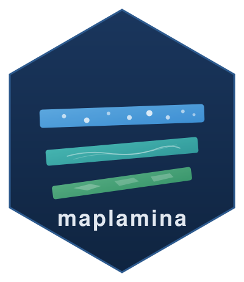

maplamina 
GPU-accelerated interactive maps for R (MapLibre GL + deck.gl via htmlwidgets).
Documentation: Getting Started + Core Ideas
- Fast: WebGL rendering with binary (typed-array) attributes for smooth interaction with millions of features.
-
R-native syntax: pipe-friendly
add_*()verbs plus formula mappings likeradius = ~value. - First-class components: views, filters, and summaries are built in - no more layer-control workarounds.
- Composable UI: bind components into shared controls, and mount them in an optional panel UI.
-
sf-friendly: works naturally with
sfobjects for points, lines, and polygons. - Quarto/R Markdown ready: designed to drop into reports and dashboards.

Demo
Installation
Install from CRAN:
install.packages("maplamina")Or install the development version from GitHub:
# install.packages("devtools")
devtools::install_github("jhumbl/maplamina")Quick start (views)
A minimal example of a layer with multiple views transitioning between different radius sizes, and a GPU-accelerated filter.
set.seed(1)
n <- 2000
d <- data.frame(
lon = runif(n, -60, 60),
lat = runif(n, -60, 60),
value = runif(n, 1, 10)
)
maplamina() |>
add_circles(d, stroke = FALSE, fill_color = "darkblue") |>
add_views(
view("Value", radius = ~value),
view("Inverse Value", radius = ~(max(value) - value + 1))
) |>
add_filters(
filter_range(~value)
)Other components
-
add_filters()-
filter_range()numeric slider -
filter_select()categorical selector
-
-
add_summaries() - Tooltips/popups:
tmpl() - Optional UI:
add_panel()+section()/sections() - Legends:
add_legend()
Layers
-
add_circles()points/circles -
add_lines()paths/lines -
add_polygons()filled polygons (+ stroke) -
add_icons()/add_markers()point icons/markers
Hardware-dependent demo: filtering 10 Million points
maplamina() |>
add_circles(big_dataset, radius=~value) |>
add_filters(
filter_range(~value, live=F)
)
Demo
Getting help
- Browse the function docs:
?maplamina,?add_circles,?add_views,?add_filters,?add_summaries. - Found a bug or want a feature? Please open an issue on GitHub: https://github.com/jhumbl/maplamina/issues